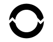
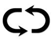
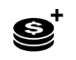
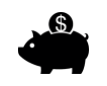
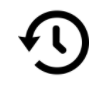
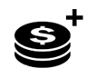
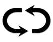

欢迎来到RICH GEYSER在线老虎机 - 石油索具行业主题游戏。该游戏的功能包括Gushing Wild重新旋转和更多令人兴奋的功能。
关于游戏
RICH GEYSER以10个固定的赔付线进行游戏。游戏有8种常规图案，如果有三个或以上的图案排列在相邻的轮盘上，从最左边的位置开始，列在赔付线上，则予以赔付。
GUSHING WILD重新旋转奖金
2个或以上 WILD百搭图案出现，则触发“GUSHING WILD”重新旋转功能。WILD图案触发的转轮下的每个“石油井”会喷出石油， 直到触发图案下方的任意位置出现WILD图案。获胜则可赢得奖金，转轮将重新旋转，WILD图案则下移1个位置。重新旋转时出现WILD，则可获得再次旋转的机会。继续重新旋转，直至所有的WILD移出屏幕之外。
游戏规则
-
选择您的赌注/金币面额。
-
按下（电脑用户）或触碰（移动设备用户）旋转键开始游戏
游戏键
|
图标 |
桌面 |
手机 |
操作 |
|
 |
旋转 | 旋转 | 启动单轮 |

|
最大赌注 | （包含在设置菜单中的赌注选择界面中） | 将投注配置设置为最大投注级别。按下旋转键启动。 |
|  | 自动游戏 | 按住旋转，开始自动游戏（或在设置菜单中） | 出现菜单界面，显示游戏中可用的所有自动游戏选项，以同时启动多轮游戏。 |
|  | 投注选择 | 投注选择（或在设置菜单中） | 为玩家提供赌注选项，以选择他们的赌注等级。 |
| 设置菜单 | 设置菜单 | 打开一个单独的设置界面，设置以下内容：音频；游戏设置；历史；信息/帮助和收银员（如果需要） | |
| 音频 | （设置菜单中可用的主设置区域） | 桌面 - 打开音频设置菜单，使播放器能够独立打开或关闭音乐或效果。 |
设置键
| 符号 | 图标 | 行为 |
| 收银台 |  | 开始返回运营商的存款页面，以便玩家向其账户添加资金（假设运营商系统中有该功能）。 |
| 赔付表与帮助 | 游戏的通用赔付表以及功能介绍的详细内容。 | |
| 游戏历史 |  | 向玩家显示该游戏中播放的游戏周期清单。 |
| 投注设置 |
 |
玩家可以在这里设置游戏的投注价值，或选择其他可选项。 |
| 自动游戏 |  | 启动页面，在该页面上可以选择和启动各种标准以及扩展自动游戏的选项，包括亏损上限（如果适用） |
| 游戏设置 | 显示可用的各种常规设置选项（例如可选择的播放器音频设置，玩家可选择他们希望在游戏期间播放的声音） | |
| 首页 | 退出当前游戏界面（在最终提示之后），并返回到操作员主游戏菜单页面。 |
其他游戏信息
-
将不同线路上的同时赢取的金额叠加支付给玩家。
-
金币值 - 显示投注奖金理论值对应的设置。所有赢得的金额都应乘以金币值，换算成赢取的现金额。
-
赌注 - 显示当前设置的赌注值。赌注大小是1个金币乘以固定的赔付线的数量。
-
总投注额是金币值乘以投注每行。
-
最大赌注（仅限桌面）- 将游戏币值设置为最大有效值。
-
旋转键 - 开始游戏。当转轮旋转时 .
-
自动游戏 - 您可以将游戏设置为无需每次点击，便可直接游戏。按下自动游戏键（或按住旋转键，打开自动游戏菜单（手机适用）），选择自动游戏的轮次。同时您可以在游戏设置处选择停止自动游戏的额外条件。为某些游戏用户版本设置亏损上限，可以防止您在自动游戏的时候损失超过上限。如需手动停止自动游戏，请按下“停止自动游戏键”。
-
赢 - 显示当前或上一期的赢取金额。
-
现金与硬币的转换会精确到小数点后两位，以最大化接近原始价值，反之亦然。然而在游戏中，硬币的转换总是以整数显示。
玩家返回值
-
理论上玩家的总体返回值为97.36%.
附加信息
-
所有获奖组合都以赔付线从左到右支付，每个都从1号转轮开始。
-
特色功能游戏中赢取的金额不计入组合线中，将额外支付。
-
如游戏硬件/软件出现故障，所有受影响的赌注和支付清零，所有受到影响的赌注将获得退款。
-
游戏最高赢取金额为250 000欧元。